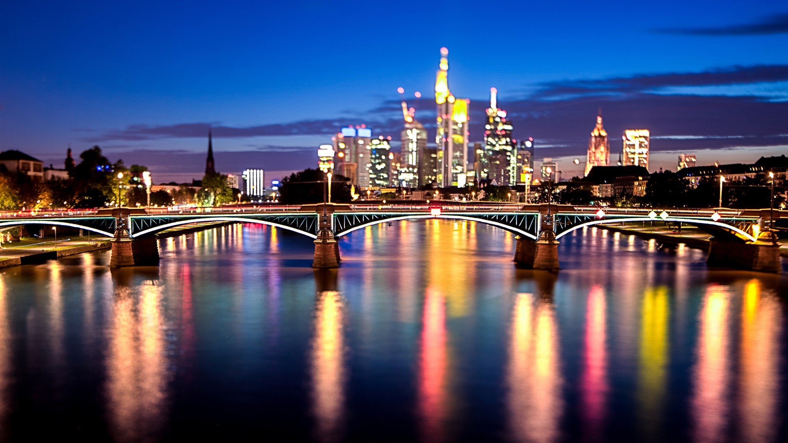
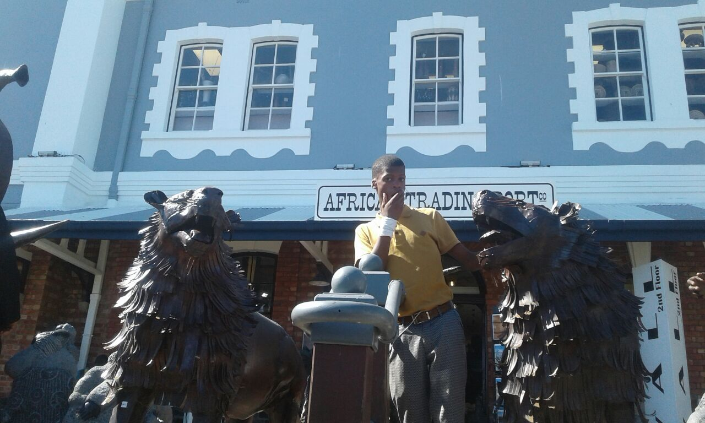
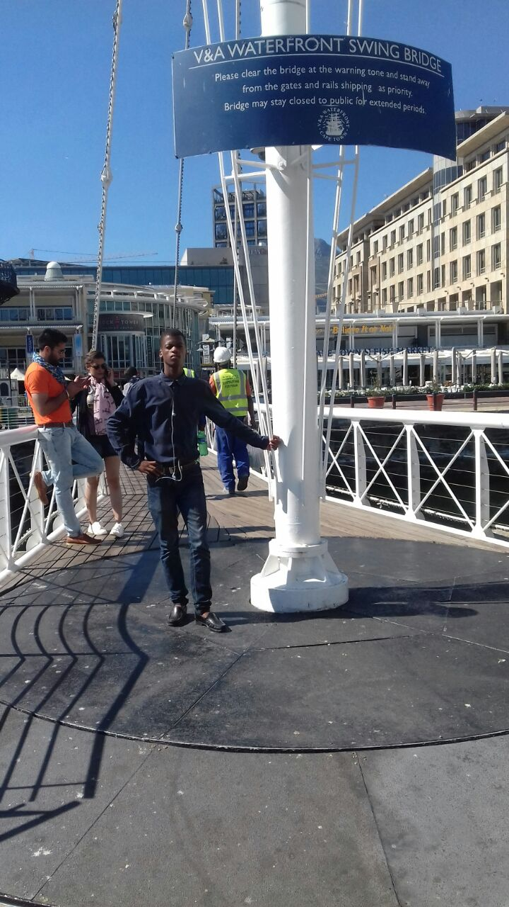
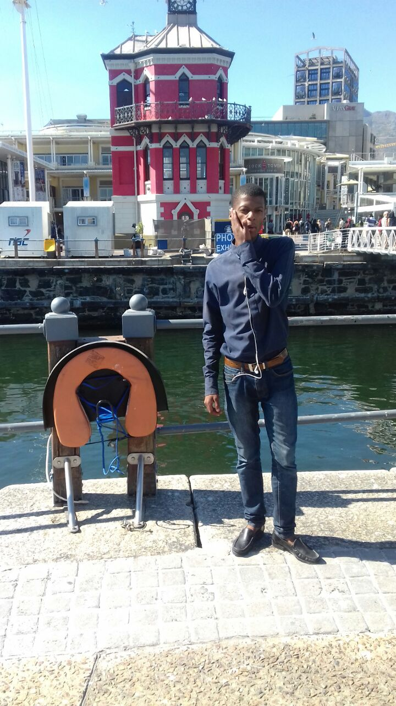

Which City?

Germany... A place of perfectionists, where you find dedication and commitment
without even looking for it. We see perfectionist by looking at the inventions that are found there, the quality of their products is just superb, you can tell by just looking at the output that the input comes from an “Agile Team”...
A simple example, where almost everyone would hardly debate it... Their cars. They have the world's best cars
Which foreign Language?
|
English Phrase
|
French Phrase
|
| Good morning, how do you do? |
Bonjour, comment allez-vous? |
| I love coding |
J'aime le codage |
| My house, is your house |
Ma maison est ta maison |
Historic places in the V & A Waterfront
African Trading Port

-
Africa under one roof, this is a workshop that brings together arts from all around Africa.
-
The African trading port is housed at The Old Port Captain's Building in Cape Town Waterfront, the port has been here as from 2001.
-
ATP has developed into a true “Wonder” on the Cape Town tourist map, attracting up to 3000 visitors per day. Come visit us on your next visit to Cape Town…it will be one of the highlights of your vacation!
Swing Bridge

-
The bridge swings over the link between the Alfred Basin and the Victoria Basin in the Victoria & Alfred Waterfront
-
The bridge was designed and constructed in 1997.
-
The bridge is operated by someone that operates it at the Habour, the bridge is moved as boats come through to pass by.
Clock Tower

-
The Clock Tower has begun to lean to one side, about 50 mm. This has since been arrested.
-
On the ground floor is a tidal gauge mechanism which was used to check the level of the tide for ships entering or leaving the docks.
-
On the second floor there is a decorative mirror room which allowed the captain an overall view of harbour activities.